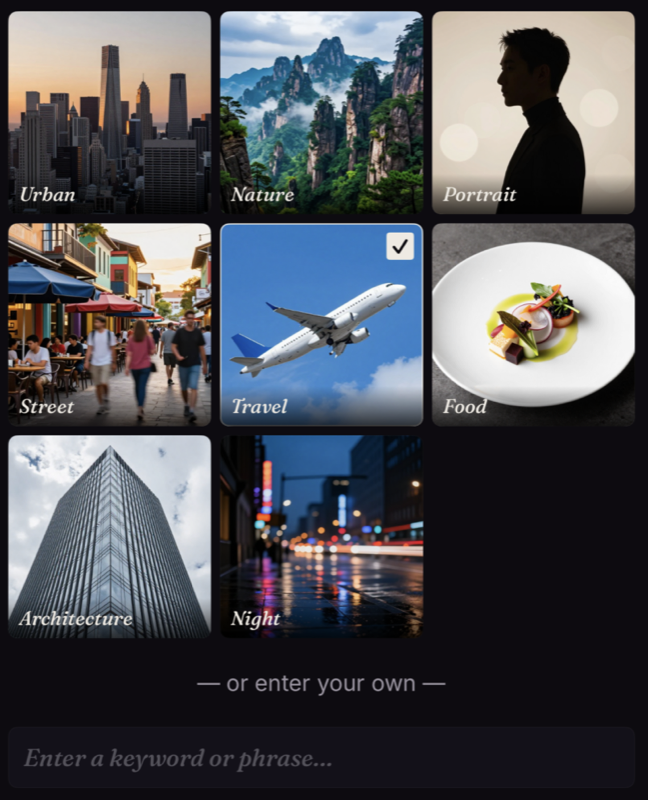
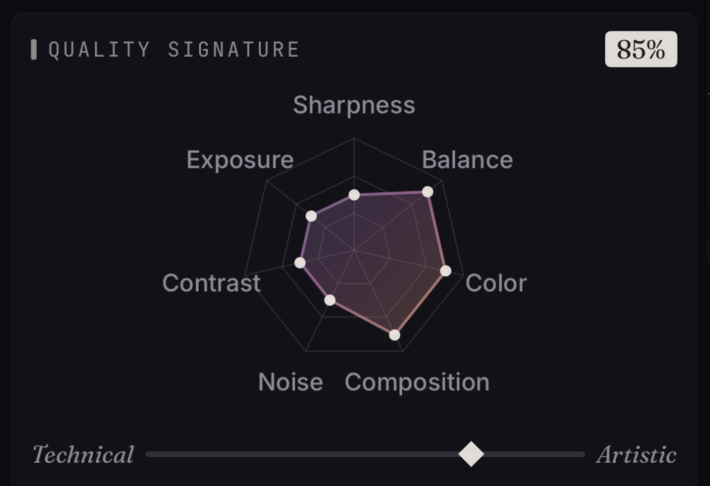
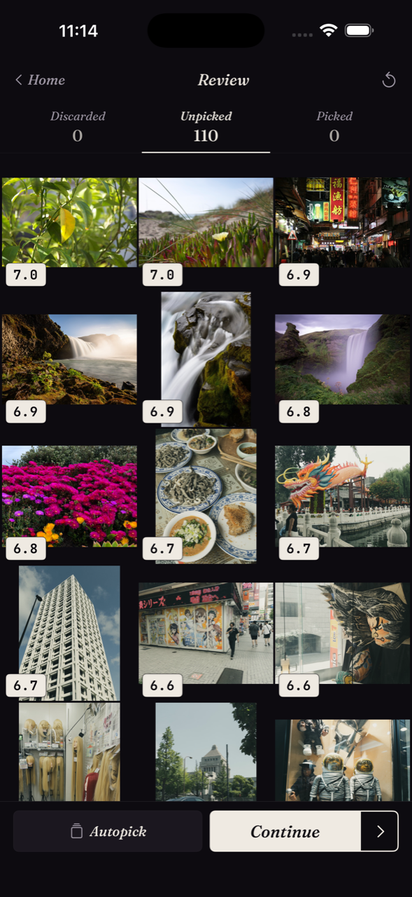
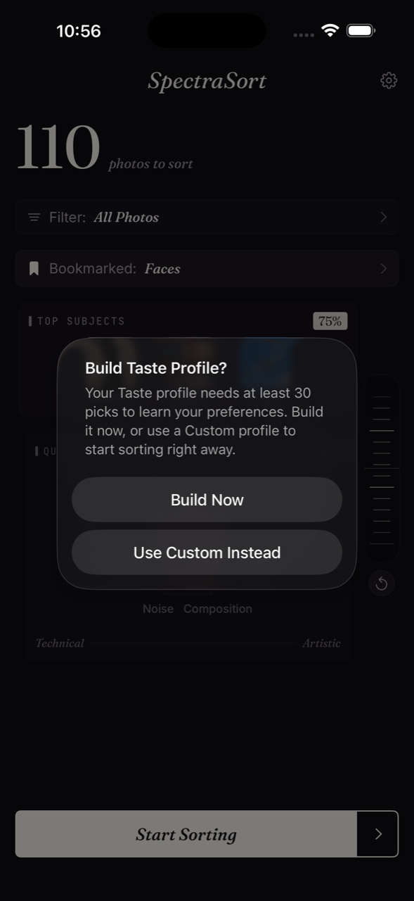
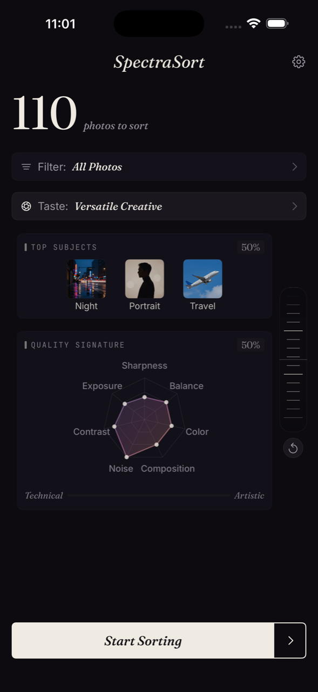

A photo library worth keeping starts with sorting it.
SpectraSort sorts hundreds / thousands of your photos in seconds and surfaces the ones that match your taste. It runs entirely on your device. Nothing leaves your phone.

Tell it what you're looking for.

City scenes, nature, portraits, food, architecture, or up to 3 of any of 8 built-in subjects. Add your own keyword for anything else — your dog, your bike, that trip to Lisbon.
Seven quality dimensions, in your hands.
Every photo is scored across seven dimensions. Dial each one in by hand, or move them all at once along the Technical/Artistic slider — pull toward Technical and weight shifts to sharpness, exposure, contrast, and noise; pull toward Artistic and composition, color harmony, and visual balance take the lead. Either way, the radar redraws live to show what your current setting actually rewards.
- Sharpness
- Color harmony
- Exposure
- Composition
- Contrast
- Visual balance
- Noise

Subject-first, quality-first, or anywhere between.
The balance wheel decides how much subject match matters relative to raw quality. Lean toward Subject and photos that hit your chosen categories rise to the top — even if they're a stop underexposed. Lean toward Quality and the seven-dimension score takes over, regardless of what the photo is of. Anywhere in between, both signals blend in the proportion you set.
Up to 100+ photos per second, on device.
Powered by Apple's Neural Engine. A library of 2,000 photos sorts in well under a minute. No upload, no waiting on a server, no cloud round-trip.
Swipe through your keepers.
After sorting, your top picks are surfaced to the top of a scored grid. Tap into Review and swipe through them the way you'd expect — right to keep, left to let go. Save your keepers to a new album, share the standouts, delete the rest in bulk.


A portrait of your preferences, quietly assembled.
Keep using the app, and a Taste profile takes shape — built from the photos you choose to keep and the ones you let go. It earns its own name. It loads like any other profile, but the subjects and signature are yours.


Three profiles, ready to go.
Use them as-is, or build your own. Save it. Switch between them.
No uploads, no cloud, no accounts. Your photos never leave your phone. Sorting is local. The Taste profile is local. The whole engine is local.
Sorting is free.
Upgrade to save, share, and bulk delete.
Common questions.
Do my photos ever leave my phone?
No. Every step — sorting, scoring, the Taste profile, subject recognition — runs on your device using Apple's Neural Engine. There are no cloud uploads. The app maker never sees your photos.
How fast is it?
Up to 100+ photos per second on the latest iPhones. A library of 2,000 photos sorts in well under a minute. Older iPhones can run slower, but everything stays local — you're not waiting on a network round-trip.
What's the difference between the three profile types?
Bookmarked profiles (City & Travel, The Outdoors, Faces) are presets — built-in, ready to use. Custom profiles let you dial in your own subjects and quality weights. The Taste profile is built automatically from your picks and discards over time — a reflection of your personal preferences.
How does the Taste profile work?
As you swipe, SpectraSort learns from the photos you keep and the ones you let go — all on your device. After about 30 picks and 10 discards, a Taste profile is created with an auto-created name (something like "Versatile Creative"); it loads like any other profile, but the subjects and signature are drawn from your specific choices. Your swipes and the resulting profile never leave your phone — no account, no cloud sync, no server-side learning — and you can wipe it any time with "Reset Taste Profile" in Settings.
What does Premium unlock?
Sorting is always free. Premium ($1.99/week, $4.99/month, or $39.99 once for life) unlocks save, share, and bulk delete — the actions you take on the results after sorting.
Will SpectraSort delete my photos?
Only when you tell it to. The Discard side of a swipe just removes the photo from your active sort — it doesn't touch your Photos library. To actually delete, you confirm via the Next Steps screen at the end of a Review session, and the deletion goes through the photo album's standard delete process.
What devices does it run on?
iPhone with iOS 16 or later. The on-device AI uses Apple's Neural Engine — every iPhone since the iPhone XS (2018) has one, and newer chips run substantially faster.
How is this different from Apple Photos or Google Photos?
Apple Photos and Google Photos are built for browsing and search across your full library. SpectraSort is built for picking — ranking your photos against your specific taste so you can quickly surface the keepers from thousands of similar shots. It's also 100% local — unlike iCloud Photo sync or Google Photos, nothing about your library leaves the phone.
Find your best shots, fast.
Free to try. Runs on any iPhone with iOS 16 or later.
Download on the App Store